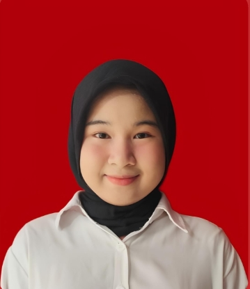

Email: fika.fauziyah12@gmail.com
Telepon: +62 895-2003-3894
Alamat: Kelapa Gading, Jakarta Utara, DKI Jakarta

Saya merupakan mahasiswa aktif Sistem Informasi di Telkom University Jakarta yang memiliki semangat belajar tinggi, bertanggung jawab, serta mampu bekerja secara individu maupun dalam tim. Memiliki ketertarikan kuat pada bidang teknologi, pengolahan data, serta manajemen dan proses bisnis.
Melakukan penelitian mengenai penggunaan Pembelajaran Mesin (Machine Learning) untuk deteksi dini perundungan siber di media sosial. Melatih algoritma AI untuk mengenali kata-kata kasar, sarkasme, dan ujaran kebencian.
Merancang dan membangun tempat sampah nirsentuh (touchless) berbasis IoT menggunakan Arduino Uno, Sensor Ultrasonik HC-SR04, dan Motor Servo untuk mendukung higienitas lingkungan.